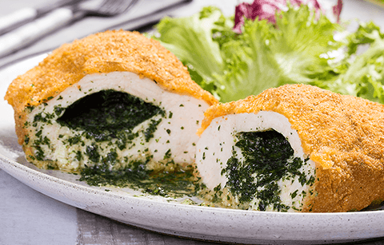

Receita de frango à Kiev

Descrição do prato
Ingredientes
- 4 peitos de frango
- 80 gramas de manteiga
- 4 colheres de sopa de salsinha picada
- 1 colher de sopa de orégano
- 3 dentes de alho
- 2 ovos
- 1⁄2 xícaras de farinha de trigo
- 1 xícara de farinha de rosca
- óleo de soja
- pimenta do reino
Materiais necessários
- palitos de dente
- papel filme (opcional)
Modo de preparo
- Tempere a manteiga
- Amoleça a manteiga levemente, preferencialmente, naturalmente à temperatura ambiente
- Em uma tigela, misture bem a salsinha, o orégano, o alho e a manteiga
- Fique à vontade para adicionar mais temperos, caso ache apropriado
- Modele a manteiga temperada em forma de cilindro
- Ponha a manteiga no papel filme e molde ela até que ela fique em formato de cilindro
- Você pode optar por usar as suas próprias mãos para isto, só assegure que elas estão devidamente higienizadas
- Se após a 1° etapa a sua manteiga ficar muito mole, ponha ela no freezer por 10-15 min, pois é de extrema importância que ela esteja consistente
- Prepare os peitos de frango
- Retire todos os ossos, nervos ou gorduras que estiverem neles
- Abra-os ao meio, mas não separe completamente os hemisférios esquerdo e direito
- Tempere-os por dentro e por fora com sal e pimenta à gosto
- No interior de cada filé, ponha 2 rodelas de manteiga temperada
- Feche os filés com três palitos de dente
- Ponha os filés na geladeira por 30 minutos para que a manteiga se preserve congelada
- Empane os filés
- Passe-os em farinha de trigo
- Em seguida, por ovos batidos
- Por fim, ponha-os em farinha de rosca
- Esquente óleo em um figideira ou panela funda
- Assim que o óleo estiver quente, ponha os filés na frigideira e frite cada lado de 5 à 7 minutos
Modo de servir
- Preparação para servir
- Após fritar, retire o seu frango à kiev e deixe-o descansar em um prato com papel toalha por 2 minutos para que o excesso de óleo seja absorvido
- Apresentação
- Corte cada peito de frango ao meio para que o interior recheado dele possa ser visto
- Acompanhamentos
- Tradicionalmente, este prato é servido com purê de batatas ou batatas cozidas, mas se você quiser uma opção mais leve, pode optar por arroz branco
- Legumes cozidos também são excelentes acompanhamentos
História do prato
A receita remonta de volta a Era da Rússia Czarista, a qual tinha a Ucrânia sob seu território, então, o prato é associado tanto a culinária Ucraniana, tanto quanto a Russa.